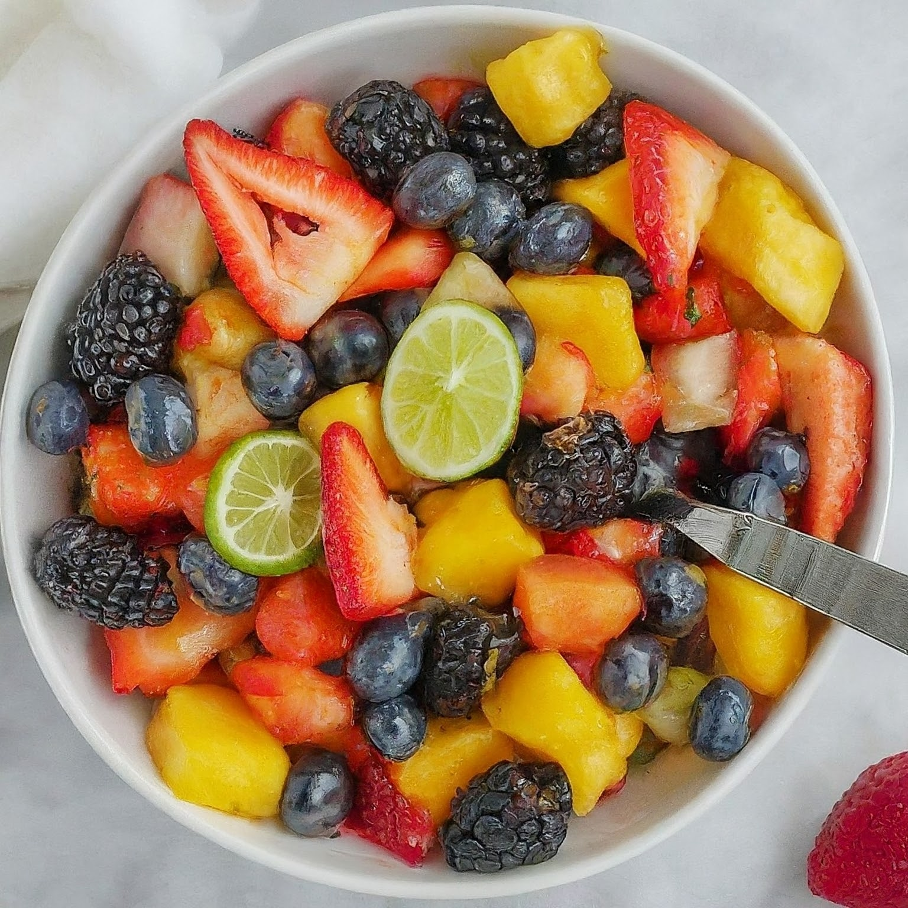

Fruit Salad with Honey Lime Dressing
Description
This 5-Minute Fruit Salad with Honey Lime Dressing is a refreshing and light dessert or healthy snack option. It's incredibly quick and easy to prepare, requiring minimal ingredients and chopping. The sweet and tangy honey lime dressing perfectly complements the juicy fruits.
Difficulty: Easy
Time to Prepare: 5 minutes
Total Time: 5 Minutes
Servings: 2-3
Ingredients
- 1 cup mixed berries (strawberries, blueberries, raspberries)
- 1/2 apple, chopped
- 1/2 banana, sliced
- 1 orange, segmented (seeds removed)
- 1 tablespoon honey
- 1 tablespoon lime juice
- Mint leaves (optional)
Steps:
-
Prepare the Fruits:
- Wash and dry your chosen fruits thoroughly.
- Chop them into bite-sized pieces.
- If using fruits with a tough skin or seeds, like apples and kiwi, remove them before chopping.
-
Combine the Fruits:
- In a medium bowl, gently combine the chopped fruits.
-
Make the Honey Lime Dressing:
- In a separate small bowl, whisk together the fresh lime juice, honey, and olive oil.
- Pour the prepared honey lime dressing over the fruit mixture in the bowl.
- Gently toss to coat all fruit pieces evenly with the dressing.
-
Serve:
- Immediately serve the fruit salad chilled for an extra refreshing experience.
- Alternatively, you can store it in the refrigerator for up to a few hours before serving if needed.